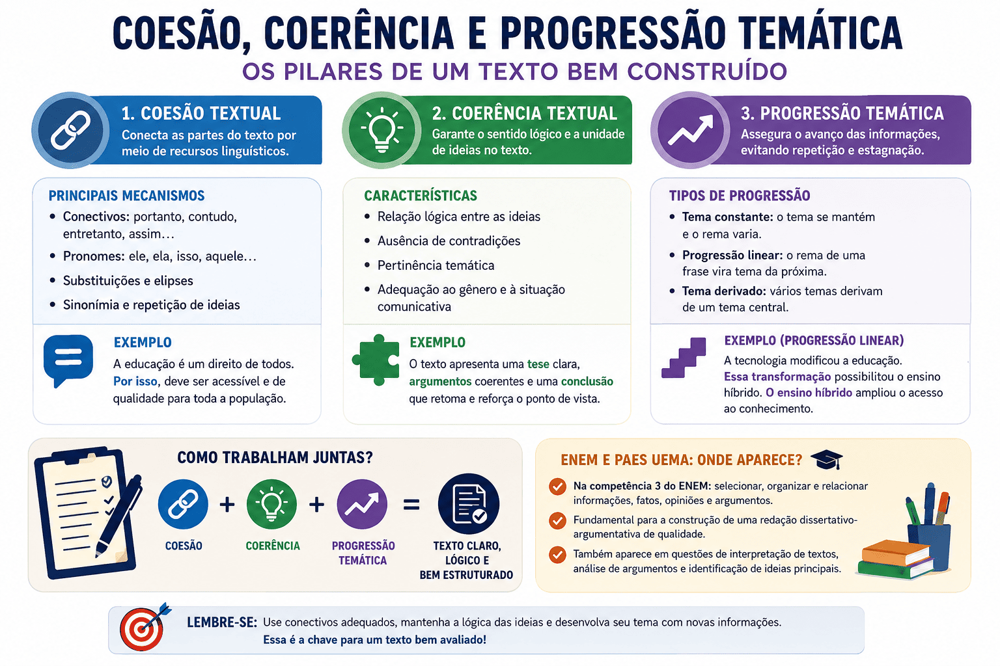

Coesão, Coerência e Progressão Temática: conceitos, diferenças, exemplos e aplicação na redação do ENEM e do PAES UEMA
Produzir um bom texto vai muito além de dominar as regras gramaticais. Para que uma redação seja clara, organizada e capaz de transmitir sua mensagem de maneira eficiente, é indispensável compreender três conceitos fundamentais da Linguística Textual: coesão, coerência e progressão temática. Esses elementos garantem que as ideias sejam apresentadas de forma lógica, articulada e contínua, permitindo ao leitor compreender facilmente o raciocínio desenvolvido pelo autor.
Embora sejam frequentemente estudados em conjunto, coesão, coerência e progressão temática desempenham funções diferentes na construção do texto. A coesão refere-se aos mecanismos linguísticos que conectam palavras, frases e parágrafos. A coerência está relacionada à construção do sentido global do texto, assegurando que as ideias não sejam contraditórias e mantenham uma sequência lógica. Já a progressão temática é responsável pelo avanço das informações ao longo da produção textual, impedindo que o texto permaneça repetitivo ou estagnado.
Esses conhecimentos são cobrados em vestibulares, concursos públicos e exames de larga escala, especialmente na redação do ENEM e do PAES UEMA. Nesses processos seletivos, não basta apresentar bons argumentos: é necessário organizá-los de maneira eficiente, utilizando conectivos, retomadas referenciais e estratégias discursivas capazes de produzir um texto coeso, coerente e bem desenvolvido.
Neste conteúdo, você compreenderá o que são coesão, coerência e progressão temática, conhecerá seus principais mecanismos, verá exemplos práticos e entenderá como esses conceitos influenciam diretamente a qualidade da redação e o desempenho em avaliações como o ENEM e o PAES UEMA.

O que é coesão textual?
A coesão textual corresponde ao conjunto de recursos linguísticos responsáveis por estabelecer ligações entre palavras, expressões, orações, períodos e parágrafos. Seu principal objetivo é garantir continuidade ao texto, evitando que as informações apareçam de maneira fragmentada ou desconexa. Em outras palavras, a coesão funciona como uma espécie de "costura" que une todas as partes da produção textual.
Sem mecanismos coesivos, mesmo um texto com boas ideias pode tornar-se difícil de compreender. O leitor precisa perceber claramente como cada informação se relaciona com a anterior e com a seguinte. Para isso, a língua dispõe de diversos recursos, como conectivos, pronomes, substituições lexicais, elipses, sinônimos, hiperônimos e repetições intencionais.
Segundo Koch (2018), a coesão manifesta-se na superfície textual por meio de procedimentos linguísticos que estabelecem relações entre os diferentes segmentos do texto. Esses mecanismos permitem que o leitor acompanhe o desenvolvimento das ideias sem dificuldades, favorecendo a fluidez da leitura.
"A coesão é o conjunto de procedimentos linguísticos que asseguram, na superfície do texto, as articulações necessárias para que as ideias se relacionem. Trata-se de mecanismos responsáveis por evitar o isolamento de termos e orações, promovendo continuidade e unidade na expressão textual." (Koch, 2018)
Em síntese, a autora destaca que a coesão não depende apenas da utilização de conectivos. Ela também envolve estratégias de retomada e referenciação, responsáveis por impedir repetições excessivas e garantir que o leitor consiga identificar facilmente os elementos mencionados ao longo do texto.
Por que a coesão textual é importante?
A coesão facilita a leitura, melhora a organização das informações e torna a comunicação mais eficiente. Um texto coeso apresenta ligações claras entre suas partes, permitindo que o leitor acompanhe o raciocínio sem interrupções ou ambiguidades desnecessárias.
Na produção de textos dissertativo-argumentativos, como os exigidos pelo ENEM e pelo PAES UEMA, a ausência de coesão pode comprometer seriamente a qualidade da argumentação. Ideias bem elaboradas perdem força quando são apresentadas de maneira desconectada ou quando faltam elementos que estabeleçam relações de causa, consequência, oposição, comparação ou conclusão.
Além disso, a coesão contribui para a organização dos parágrafos. Cada novo trecho do texto deve dialogar com o anterior, criando uma sequência lógica que conduza o leitor do início ao fim da argumentação.
Principais mecanismos de coesão textual
A língua portuguesa oferece diversos recursos responsáveis pela construção da coesão textual. Conhecer esses mecanismos permite produzir textos mais claros, objetivos e bem estruturados.
- Conectivos discursivos: estabelecem relações de adição, oposição, causa, consequência, explicação, conclusão, comparação ou exemplificação. Exemplos: além disso, portanto, contudo, entretanto, por conseguinte, assim, dessa forma, logo, entretanto, por outro lado.
- Referenciação pronominal: utiliza pronomes para retomar elementos anteriormente mencionados, evitando repetições desnecessárias. Exemplos: ele, ela, isso, aquele, estes, tais.
- Substituição lexical: consiste em substituir um termo por sinônimos, expressões equivalentes ou hiperônimos, enriquecendo o texto e reduzindo repetições.
- Elipse: ocorre quando determinado termo é omitido porque pode ser facilmente recuperado pelo contexto.
- Reiteração: repetição intencional de palavras ou expressões quando ela contribui para enfatizar uma ideia importante.
- Cadeias referenciais: sequência de palavras que fazem referência ao mesmo objeto, personagem, conceito ou acontecimento ao longo do texto.
Exemplo de coesão textual
"A leitura amplia o conhecimento. Além disso, desenvolve o pensamento crítico. Por esse motivo, o hábito de ler deve ser incentivado desde a infância."
Observe que os conectivos "além disso" e "por esse motivo" estabelecem relações entre as informações, tornando o texto mais fluido e organizado. Sem esses elementos, as frases continuariam corretas do ponto de vista gramatical, mas perderiam parte de sua articulação.
Erros comuns de coesão textual
Entre os problemas mais frequentes encontrados em redações estão:
- repetição excessiva da mesma palavra em um curto espaço de texto;
- uso inadequado de conectivos, estabelecendo relações semânticas incorretas;
- emprego de pronomes sem referência clara;
- mudança brusca de assunto entre os parágrafos;
- frases isoladas sem relação lógica com o restante do texto.
Evitar esses problemas torna a produção textual mais agradável de ler e demonstra domínio dos mecanismos de textualidade, característica valorizada pelos corretores da redação do ENEM, do PAES UEMA e de diversos vestibulares brasileiros.
O que é coerência textual?
Enquanto a coesão está relacionada aos mecanismos linguísticos que conectam as partes do texto, a coerência textual refere-se à construção do sentido global da mensagem. Um texto coerente apresenta ideias organizadas de forma lógica, sem contradições, desvios temáticos ou informações incompatíveis entre si. Em outras palavras, a coerência permite que o leitor compreenda o texto como uma unidade significativa.
A coerência não depende apenas da gramática ou da presença de conectivos. Ela resulta da relação entre as informações apresentadas, do conhecimento de mundo compartilhado entre autor e leitor e da adequação do texto ao contexto comunicativo. Por esse motivo, um texto pode apresentar excelente coesão, mas ainda assim ser incoerente caso suas ideias não façam sentido quando analisadas em conjunto.
Na Linguística Textual, a coerência é entendida como um processo interpretativo. Isso significa que ela é construída na interação entre o texto e o leitor. Durante a leitura, o indivíduo relaciona as informações apresentadas com seus conhecimentos prévios, realizando inferências que possibilitam a compreensão da mensagem.
Segundo Beaugrande e Dressler (1981), a coerência constitui um dos principais fatores de textualidade, pois estabelece as relações conceituais responsáveis pela continuidade dos sentidos ao longo do texto.
"A coerência é o conjunto de relações conceituais que permitem ao leitor estabelecer continuidade de sentidos ao longo do texto. Ela depende da interação entre conhecimento linguístico, conhecimento de mundo e expectativas cognitivas, de modo que o texto não seja percebido como uma sequência aleatória de informações." (Beaugrande & Dressler, 1981)
Assim, compreender um texto não significa apenas identificar palavras ou frases isoladas. É necessário perceber como cada informação contribui para o desenvolvimento da ideia central, estabelecendo relações de causa, consequência, comparação, oposição, exemplificação ou conclusão.
Características de um texto coerente
Diversos fatores contribuem para que um texto seja considerado coerente. Entre os principais, destacam-se:
- manutenção do foco no tema proposto;
- organização lógica das informações;
- ausência de contradições internas;
- compatibilidade entre os argumentos apresentados;
- adequação ao gênero textual;
- adequação ao público-alvo;
- sequência natural entre introdução, desenvolvimento e conclusão.
Quando esses aspectos são respeitados, o leitor consegue acompanhar o raciocínio desenvolvido pelo autor com facilidade, compreendendo o objetivo comunicativo do texto.
Exemplo de texto coerente
"O desperdício de água representa um dos principais desafios ambientais da atualidade. Por isso, políticas públicas voltadas ao consumo consciente e ao reaproveitamento dos recursos hídricos contribuem para reduzir os impactos ambientais e garantir a sustentabilidade."
Nesse exemplo, todas as informações relacionam-se ao mesmo tema e desenvolvem uma sequência lógica de ideias. Há uma relação clara entre problema, justificativa e solução, favorecendo a construção do sentido global.
Exemplo de incoerência textual
"O trânsito das grandes cidades está cada vez mais intenso. Portanto, a alimentação saudável deve ser incentivada nas escolas."
Embora cada oração seja correta do ponto de vista gramatical, não existe relação lógica entre elas. O conectivo "portanto" estabelece uma conclusão que não decorre da informação anterior, produzindo incoerência textual.
Principais causas da incoerência
Muitos problemas de coerência surgem durante a escrita porque o autor desenvolve suas ideias sem planejamento. Entre os erros mais frequentes estão:
- contradição entre argumentos;
- mudança inesperada de assunto;
- apresentação de informações incompatíveis;
- uso inadequado de exemplos;
- generalizações excessivas;
- conclusões que não decorrem dos argumentos apresentados;
- falta de desenvolvimento das ideias.
Esses problemas prejudicam significativamente a compreensão do texto e costumam resultar em perda de pontos em redações escolares, vestibulares e concursos públicos.
A coerência e a argumentação
Nos textos dissertativo-argumentativos, a coerência exerce papel fundamental na construção da argumentação. Cada argumento deve complementar o anterior, fortalecendo progressivamente a defesa do ponto de vista apresentado pelo autor. Quando há contradições, mudanças bruscas de direção ou informações irrelevantes, a força argumentativa diminui e o texto perde credibilidade.
Por isso, antes de iniciar a escrita, recomenda-se elaborar um planejamento contendo a tese, os principais argumentos e a conclusão pretendida. Essa organização facilita a manutenção da coerência ao longo de toda a produção textual.
O que é progressão temática?
Além de apresentar coesão e coerência, um bom texto precisa evoluir ao longo da leitura. Essa evolução recebe o nome de progressão temática. Trata-se do mecanismo responsável por introduzir novas informações sem abandonar o tema principal, garantindo que cada parágrafo contribua efetivamente para o desenvolvimento da discussão.
Em um texto bem construído, cada informação nova relaciona-se às anteriores, ampliando gradativamente o conhecimento do leitor sobre o assunto tratado. Quando isso não acontece, o texto torna-se repetitivo, circular e pouco informativo, comprometendo sua qualidade argumentativa.
Segundo Leonor Lopes Fávero (2009), a progressão temática organiza o movimento das informações por meio da relação entre tema e rema. O tema corresponde ao assunto já conhecido ou apresentado anteriormente, enquanto o rema introduz informações novas que fazem o texto avançar.
"A progressão temática consiste na articulação entre elementos já conhecidos pelo leitor e novas informações que o texto introduz ao longo do seu desenvolvimento. Essa relação entre tema e rema impede a estagnação textual e orienta o movimento argumentativo, contribuindo para a clareza e a lógica interna da produção escrita." (Fávero, 2009)
Dessa forma, a progressão temática evita repetições desnecessárias e garante que cada novo período acrescente informações relevantes para o desenvolvimento da ideia central.
Tipos de progressão temática
A Linguística Textual identifica diferentes formas pelas quais as informações podem avançar ao longo de um texto. Conhecer esses modelos ajuda não apenas na análise de textos, mas também na produção de redações mais organizadas e argumentativamente consistentes. Embora existam diversas classificações, três tipos de progressão temática aparecem com maior frequência em materiais didáticos e em provas de vestibulares.
Progressão com tema constante
Na progressão com tema constante, o assunto principal permanece o mesmo durante vários períodos, enquanto novas informações são acrescentadas sobre esse mesmo tema. Esse modelo é bastante utilizado em textos expositivos e explicativos, pois permite aprofundar gradativamente determinado assunto sem perder a unidade temática.
Exemplo:
"A leitura desenvolve o pensamento crítico. A leitura amplia o vocabulário. A leitura também favorece a interpretação de textos e estimula a criatividade."
Nesse exemplo, o tema "leitura" permanece constante, enquanto cada frase acrescenta uma nova característica ou benefício.
Progressão linear
Na progressão linear, uma informação apresentada no final de uma frase passa a ser o tema da frase seguinte. Esse mecanismo produz um encadeamento natural entre as ideias e contribui para a fluidez do texto.
Exemplo:
"A tecnologia modificou a educação. Essa transformação possibilitou o crescimento do ensino híbrido. O ensino híbrido, por sua vez, ampliou o acesso ao conhecimento."
Observe que cada nova informação deriva diretamente da anterior, formando uma sequência lógica facilmente acompanhada pelo leitor.
Progressão por temas derivados
Nesse tipo de progressão, vários subtópicos desenvolvem um mesmo tema central. É muito comum em artigos científicos, textos didáticos e redações dissertativo-argumentativas.
Exemplo:
"O meio ambiente enfrenta diversos desafios. Entre eles estão o desmatamento, a poluição dos rios, as mudanças climáticas e a perda da biodiversidade."
O tema central é "meio ambiente", enquanto os demais elementos representam desdobramentos desse assunto principal.
Por que a progressão temática é importante?
A progressão temática impede que o texto se torne repetitivo. Em vez de repetir continuamente a mesma informação com palavras diferentes, o autor acrescenta novos dados, exemplos, argumentos e explicações que ampliam a compreensão do leitor.
Esse avanço constante das informações é um dos aspectos que diferenciam um texto superficial de uma produção textual madura. Quanto melhor o autor consegue desenvolver o tema, maior tende a ser a qualidade da argumentação e da organização textual.
Em redações escolares e vestibulares, é comum encontrar textos que apresentam boa gramática, mas desenvolvem pouco o tema. Isso geralmente ocorre porque falta progressão temática: o candidato permanece repetindo a mesma ideia ao longo de vários parágrafos, sem acrescentar novas informações relevantes.
Erros que comprometem a progressão temática
- repetição constante da mesma ideia;
- parágrafos que dizem praticamente a mesma coisa;
- introdução de assuntos que não possuem relação com o tema principal;
- desenvolvimento insuficiente dos argumentos;
- mudanças bruscas de foco ao longo do texto;
- conclusão que apenas repete a introdução, sem sintetizar a argumentação.
Evitar esses problemas torna a leitura mais dinâmica e demonstra domínio da organização textual.
Como coesão, coerência e progressão temática trabalham juntas?
Embora sejam estudados separadamente, coesão, coerência e progressão temática funcionam de maneira integrada durante a produção de qualquer texto. Um depende do outro para que a comunicação ocorra de forma eficiente.
A coesão estabelece as ligações linguísticas entre palavras, frases e parágrafos. A coerência organiza essas informações em uma sequência lógica de sentidos. A progressão temática, por sua vez, garante que o texto avance continuamente, acrescentando novas informações sem abandonar o tema central.
Quando um desses elementos falha, toda a qualidade do texto pode ser comprometida. Um texto pode apresentar conectivos corretos e boa coesão, mas ser incoerente caso os argumentos sejam contraditórios. Também pode ser coerente, porém repetitivo, quando não há progressão temática. Da mesma forma, um texto que apresenta novas informações continuamente, mas não utiliza mecanismos de ligação entre elas, torna-se difícil de acompanhar.
Por isso, esses três conceitos são considerados pilares da textualidade e aparecem com frequência em livros de Linguística Textual, gramáticas modernas e materiais voltados para vestibulares.
Quadro comparativo
| Aspecto | Função |
|---|---|
| Coesão | Conectar palavras, frases e parágrafos por meio de recursos linguísticos. |
| Coerência | Garantir sentido lógico e unidade ao texto. |
| Progressão temática | Promover o avanço das informações ao longo da produção textual. |
Na prática, esses três fatores atuam simultaneamente. Enquanto o autor escreve, precisa conectar as ideias, manter a lógica da argumentação e desenvolver continuamente o tema proposto. O equilíbrio entre esses aspectos é um dos principais indicadores de maturidade na escrita.
Coesão, coerência e progressão temática na redação do ENEM
Na redação do ENEM, dominar esses três conceitos é indispensável para construir um texto dissertativo-argumentativo de qualidade. Embora o edital não apresente um critério específico chamado "coesão" ou "progressão temática", esses aspectos influenciam diretamente o desempenho do participante, especialmente na Competência 3, que avalia a capacidade de selecionar, organizar e relacionar informações, fatos, opiniões e argumentos em defesa de um ponto de vista.
Um candidato pode possuir excelente repertório sociocultural, mas perder pontos caso seus argumentos apareçam desconectados, contraditórios ou pouco desenvolvidos. Por isso, durante a elaboração da redação, é fundamental estabelecer relações claras entre os parágrafos, utilizar conectivos variados, retomar informações de maneira adequada e desenvolver progressivamente a argumentação.
Outro aspecto importante é evitar a repetição excessiva das mesmas ideias. Muitos participantes permanecem explicando um único argumento durante todo o texto, sem apresentar novas informações. Esse problema evidencia falta de progressão temática e reduz a qualidade argumentativa da redação.
Ao planejar o texto antes de começar a escrever, o candidato consegue distribuir melhor seus argumentos, organizar a sequência lógica das ideias e construir uma conclusão coerente com tudo o que foi desenvolvido anteriormente.
Continue estudando Produção Textual
- Gêneros textuais e tipos textuais: diferenças, características e relações
- Texto Narrativo: o que é, elementos (PENTE) e estrutura do enredo
- Texto Descritivo: o que é, características, tipos e exemplos práticos
- Texto Expositivo: o que é, características, tipos e exemplos
- Texto Injuntivo: o que é, características, exemplos e diferenças
- Texto Prescritivo: o que é, características e diferenças para o texto injuntivo
- Coesão, coerência e progressão temática na produção textual
- Produção Textual e Redação — página 1
- Produção Textual e Redação — página 2
Referências
ANTUNES, Irandé. Linguagem e texto: reflexões sobre as práticas discursivas. São Paulo: Parábola Editorial, 2010.
BEAUGRANDE, Robert de; DRESSLER, Wolfgang U. Introduction to Text Linguistics. London: Longman, 1981.
FÁVERO, Leonor Lopes. Coesão e coerência textuais. 12. ed. São Paulo: Ática, 2009.
KOCH, Ingedore Villaça. Desvendando os segredos do texto. 8. ed. São Paulo: Cortez, 2018.
KOCH, Ingedore Villaça; TRAVAGLIA, Luiz Carlos. A coerência textual. 18. ed. São Paulo: Contexto, 2015.
MARCUSCHI, Luiz Antônio. Produção textual, análise de gêneros e compreensão. São Paulo: Parábola Editorial, 2008.
PLATÃO, Francisco; FIORIN, José Luiz. Para entender o texto: leitura e redação. 17. ed. São Paulo: Ática, 2016.
VAL, Maria da Graça Costa. Redação e textualidade. 4. ed. São Paulo: Martins Fontes, 2006.
Explore Outros Conteúdos
Continue seus estudos acessando outras seções do site Mestre Kira: